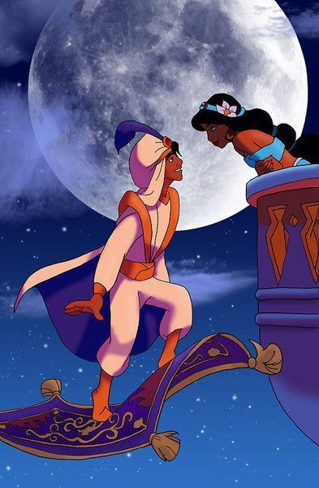

Siapa sih Aladdin itu?
Aladdin adalah pemuda sederhana yang hidup di tengah hiruk-pikuk pasar, namun memiliki hati emas dan impian besar yang membawanya hingga ke istana megah. Dengan keberanian dan ketulusan hatinya, Aladdin menemukan sebuah lampu ajaib yang menyimpan jin kocak penuh kekuatan luar biasa. Bersama jin tersebut, Aladdin menjalani petualangan seru penuh kejutan: menghadapi penjahat jahat yang licik, menjelajahi langit dengan karpet terbang ajaib, dan menempuh perjalanan untuk menemukan cinta sejati yang tulus dan penuh makna. Kisah Aladdin mengajarkan kita bahwa dari kesederhanaan dan keberanian, segala mimpi bisa diwujudkan dengan bantuan keajaiban dan hati yang tulus.
Siap menjelajahi kisah Aladdin? Yuk lanjut ke halaman selanjutnya!